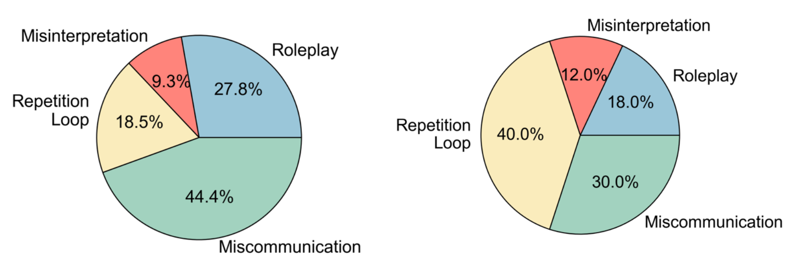

We introduce a novel benchmark designed to evaluate the collaborative performance of multimodal multi-agent systems through language communication. Our benchmark features a variety of puzzles, providing a comprehensive evaluation across four key categories of agentic capability in a communicative collaboration setting. By testing both agent-agent and agent-human collaborations using open-source and closed-source models, our findings reveal surprising weaknesses in state-of-theart models, including proprietary models like GPT-4o. These models struggle to outperform even a simple random agent baseline in agent-agent collaboration and only surpass the random baseline when a human is involved.
We find that even the most powerful closed-source LLMs struggle to communicate without human involvement. Here we plot the success rate as a function of conversation length for different settings. We obtain the overall success rate and mistake rate by averaging over 100 sampled instances across all puzzles for the AI-AI setting, and 30 sampled instances for the AI-Human setting. Diamond marker indicates a human is the solver agent. Square marker indicates the solver and expert are played by the same AI model.
We further analyze the underlying reason for failure based on conversations of 50 failed runs. We look at GPT-4o (left) and InternVL 26b (right) conversations, and define the following failure modes:
| Model | Button | Dog | Wire | Who | LED | Memory | Keypad | Password | Color | Maze | Overall |
|---|---|---|---|---|---|---|---|---|---|---|---|
| Random | 100 | 100 | 100 | 100 | 85 | 25 | 33 | 0 | 1 | 15 | 56 |
| GPT-4V | 80 | 60 | 100 | 90 | 68 | 24 | 72 | 0 | 14 | 21 | 53 |
| GPT-4o | 100 | 100 | 100 | 90 | 26 | 34 | 40 | 0 | 14 | 0 | 50 |
| InternVL (26b) | 90 | 100 | 80 | 20 | 30 | 20 | 10 | 0 | 0 | 0 | 35 |
| InternVL (8b) | 100 | 100 | 30 | 40 | 4 | 12 | 5 | 0 | 11 | 0 | 30 |
| QWenVL (2b) | 100 | 100 | 30 | 20 | 100 | 0 | 17 | 0 | 9 | 2 | 38 |
| QWenVL (7b) | 90 | 90 | 30 | 10 | 52 | 0 | 33 | 0 | 4 | 12 | 32 |
Using COMMA, we benchmark the collaborative capabilities of closed source and open source multimodal LLMs, summarized in the table above.
There's a lot of excellent work related to multimodal agents which inspired ours.
Visual Web Arena introduces the idea of using multimodal agents to perform complex multi-step web tasks in a controlled environment. We are inspired by their environment, and extend their framework to involve multi-agent collaboration.
Alane Suhr has published many related works on the subject of using LLMs decision-making agents such as Fine-Tuning Large Vision-Language Models as Decision-Making Agents via Reinforcement Learning and Minding Language Models' (Lack of) Theory of Mind: A Plug-and-Play Multi-Character Belief Tracker. Her works strongly inspired the ideas in our benchmark.
Some works illustrate the potential of agents to collaborate to perform difficult tasks such as Software Development and Function Generation.
For a more comprehensive list, feel free to check out this survey paper.
@article{ossowski2024comma,
title={COMMA: A Communicative Multimodal Multi-Agent Benchmark},
author={Ossowski, Timothy and Chen, Jixuan and Maqbool, Danyal and Cai, Zefan and Bradshaw, Tyler and Hu, Junjie},
journal={arXiv preprint arXiv:2410.07553},
year={2024}
}